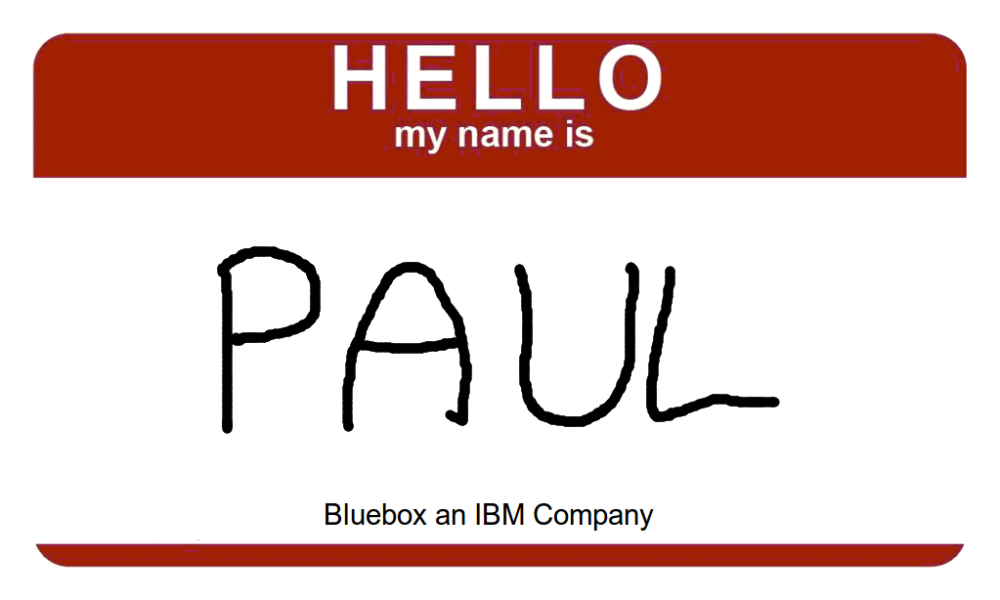
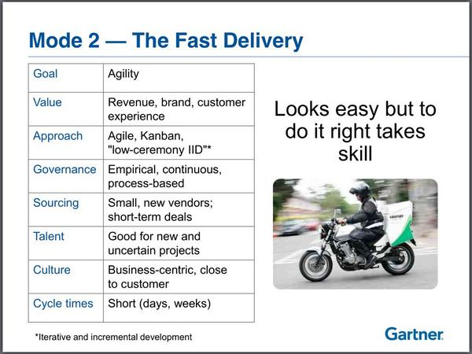
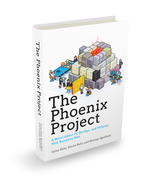
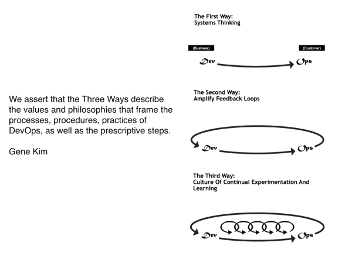
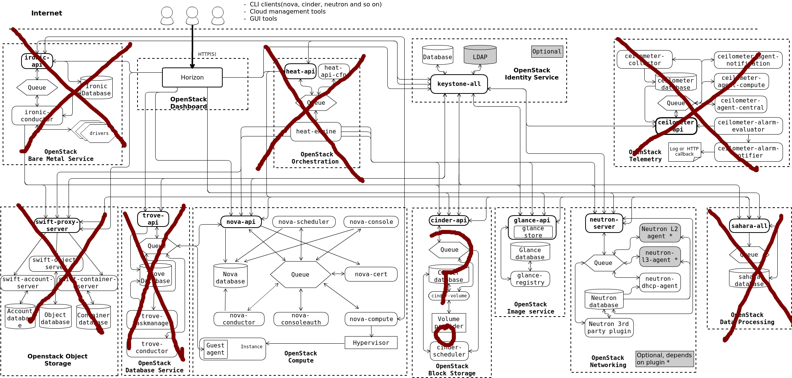

Just Enough Openstack for Docker
* Rule one of getting a CFP accepted is to mention "docker"
OpenStack is a large collection of complicated projects that join together to form a hard to deploy and harder to run distributed system. This talk will show you how you can harness the concepts of bimodal IT to increase agility in your IT organization by utilizing a minimal Openstack install and various Docker based tools to build a platform that will increase developer productivity.
Rule two is to write a excerpt that doesn't really say anything meaningful
Openstack is a large collection of complicated projects that join together to form a hard to deploy and harder to run distributed system . This talk will show you how you can harness the concepts of bimodal IT to increase agility in your IT organization by utilizing a minimal Openstack install and various Docker based tools to build a platform that will increase developer productivity.
that is little more than a set of loosely coupled buzzwords.
Just Enough Openstack for Docker
Docker Docker Docker
Hard to deploy
Harder to run
distributed system
bimodal IT
increase agility in your IT organization
Minimal Openstack install
Docker based tools
build a platform
increase developer productivity
Just Enough Openstack for Docker
Bimodal IT
Just Enough Openstack [for Docker]
Docker on Openstack
Once your CFP is accepted you can pretty much talk about anything you want.
Let's get to know eachother

* But first, let's take a moment to get to know eachother.
Let's get to know eachother
* clearly I can't ask each of you to introduce yourself, but I can run some audience participation...
Bimodal IT
* I want to start off by talking about bimodal IT.
Traditional IT
Pets
* mode 1 is your legacy IT business.
Forward Thinking

Cattle
* mode 2 is your forward thinking IT business.
Forward Thinking
Cattle
* without this second mode, your business will suffer greatly as your competitors go down this path

* not really increasing developer productivity, we're reducing friction.

Docker and the Three Ways of DevOps by John Willis
* three ways of devops
* My summary here: don't worry about legacy when you're making decisions for the future.
Openstack is...
Hard to Install
Harder to Operate
* with that out of the way, let's talk about how terrible openstack is
Which Operating System ?
Redhat - RHEL, CentOS
Debian - Debian, Ubuntu
* Before you can even start to install you need to choose an OS.
Which Openstack distro ?
OS native - Ubuntu , RHEL
from Source ... git://
Helion, Mirantis, ...
Roll your own packages
http://github.com/blueboxgroup/giftwrap
* You've chosen an OS ... now choose an openstack "distro"
http://docs.openstack.org/admin-guide-cloud/content/logical-architecture.html
* Each "shape" in this diagram represents an openstack component and 100+ configurable options. 1000s!Percona+Galera , Postgres, ORACLE?!?!?!RabbitMQ , ZeroMQ, QPIDml2 , OVS, linux bridge , VXLAN, VLAN, GRE, vendorKVM , Xen, HyperV, VMWare, Docker, LXC, etc

* If you're new to openstack/cloud lets not complicate things. this is all you really need.
Openstack Big Tent
* ofc, if want sane repeatable openstack, you'll use config management
Ursula
http://github.com/blueboxgroup/ursula
Curated and opinionated
Used to manage a lot of openstack clouds by a small team
Feature flags to enable/disable optional items
Kick the tires with Vagrant .
~ 1200 ansible tasks to do a simple openstack install
* bluebox's tooling for deploying and managing openstack clouds is called Urusla
Shameless Plug
<Bluebox Logo goes here>
For ~ $5k/mo Bluebox will host and manage your Private Cloud for you. Avoid all the BS of running openstack, and spend your time learning how to consume.
WTF is Docker ?
https://www.docker.com/whatisdocker/
Process Isolation, chroot on steroids
Docker vs VM
* Docker = Containers ! Virt. Can act like a VM
Dockerfile
# Base docker image
FROM paulczar/chrome
RUN apt-get install -y pepperflashplugin-nonfree \
&& rm -rf /var/lib/apt/lists/*
COPY local.conf /etc/fonts/local.conf
COPY . /slides
# Autorun chrome
ENTRYPOINT [ "/usr/bin/google-chrome-stable" ]
CMD [ "--user-data-dir=/data", "--no-sandbox", "file:///slides/index.html" ]
* This is a dockerfile.
Docker Compose
nginx:
build: .
command: /app/bin/boot nginx
volumes: [ .:/app ]
links: [ mysql, hhvm ]
ports: [ 8081:8080 ]
hhvm:
build: .
command: /app/bin/boot hhvm
volumes: [ .:/app ]
links: [ mysql ]
ports: [ 9000 ]
mysql:
image: orchardup/mysql
ports: [ 3306:3306 ]
* takes yml file and builds containers as described
Factorish
http://factorish.github.io/factorish/#/
Run legacy apps in a container
Make the container 12 factor, not the app
Demo apps from simple python to full ELK stack
http://github.com/factorish/factorish
http://github.com/factorish/factorish-elk
* Toolset I developed for making legacy style apps run in a docker container
Openstack Images for Docker
Ubuntu Trusty / Fedora
CoreOS / RancherOS
Atomic / Snappy
How to Docker with Openstack ?
Just plain old Docker.
Docker Machine
Deis
CoreOS + Fleet
Kubernetes
Rancher Labs
* Going to talk through a bunch of ways to docker on openstack
Docker Machine
https://github.com/docker/machine/releases
* you could just spin up an instance and ssh in and use docker, or just expose the docker port
Docker Machine
$ docker-machine create -d openstack \
--openstack-image-id 1525c3f3-1224-4958-bd07-da9feaedf18b \
--openstack-flavor-id 2 --openstack-net-id ba0fdd03-72b5-41eb-bb67-fef437fd6cb4 \
--openstack-floatingip-pool external \
--openstack-ssh-user ubuntu --openstack-sec-groups docker \
testenv
Creating machine...
To see how to connect Docker to this machine, run: docker-machine env testenv
$
* in this case the image is ubuntu trusty and I have both an internal network and a floating ip pool.
Docker Machine
$ docker-machine env testenv
export DOCKER_TLS_VERIFY="1"
export DOCKER_HOST="tcp://x.x.x.x:2376"
export DOCKER_CERT_PATH="/home/pczarkowski/.docker/machine/machines/testenv"
export DOCKER_MACHINE_NAME="testenv"
$ eval "$(docker-machine env testenv)"
$ docker ps
CONTAINER ID IMAGE COMMAND CREATED STATUS
* after docker machine succesfully runs I can get the env vars to pass to docker like this
Docker Machine
$ docker run -p 80 --name nginx -d nginx
$ docker inspect nginx| grep HostPort
"HostPort": "32769"
$ curl x.x.x.x:32769
...
...
Welcome to nginx!
* now we can run any randome docker command
Docker Machine
Supports Docker-Swarm
Support Docker-Compose
No host volumes
Good for test/staging/demo
Not great for dev
* docker swarm for docker based orchestration (NEW)
DEIS
Most mature Opensource [docker] PAAS*
Heroku inspired workflow
distributed stateless applications
seperation of responsibilities
Solid docs for running on Openstack
* arguably deis is most mature and functional opensource docker based PAAS
DEIS
$ git clone https://github.com/deis/example-ruby-sinatra.git
$ cd example-ruby-sinatra
$ deis create && git push deis master
Creating application... done, created nimbus-insignia
Git remote deis added
...
-----> Launching...
done, nimbus-insignia:v2 deployed to Deis
http://nimbus-insignia.x.x.x.x.xip.io
$ curl http://nimbus-insignia.x.x.x.x.xip.io
Powered by Deis!
Running on container ID 88384adc62d4
* example of running application in deis
DEIS
$ deis config:set POWERED_BY=openstack
Creating config... done, v3
=== nimbus-insignia
DEIS_APP: nimbus-insignia
POWERED_BY: openstack
$ curl http://nimbus-insignia.x.x.x.x.xip.io
Powered by openstack
Running on container ID 6440f619dcfc
* deis has a bunch of commands to deal with your running app
DEIS
$ deis scale web=3
Scaling processes... but first, coffee!
...
$ curl http://nimbus-insignia.173.247.105.17.xip.io
Running on container ID 6440f619dcfc
$ curl http://nimbus-insignia.173.247.105.17.xip.io
Running on container ID cbcf905b8b34
$ curl http://nimbus-insignia.173.247.105.17.xip.io
Running on container ID 676cb76cb562
* adding more or less containers to your app is easy, simply run deis scale
CoreOS + Fleet
CoreOS - minimal OS for running Containers
etcd - distrubuted Key/Value store
flannel - network overlay
fleet - Container Orchestration
fleet takes systemd units with special section
We actually just saw it in action with DEIS
* DEIS uses coreos with fleet to deploy and orchestrate itself.
CoreOS + Fleet
[Unit]
Description=deis-router
[Service]
EnvironmentFile=/etc/environment
ExecStartPre=/bin/sh -c "IMAGE=`/run/deis/bin/get_image /deis/router` && docker history $IMAGE >/dev/null 2>&1 || docker pull $IMAGE"
ExecStartPre=/bin/sh -c "docker inspect deis-router >/dev/null 2>&1 && docker rm -f deis-router || true"
ExecStart=/bin/sh -c "IMAGE=`/run/deis/bin/get_image /deis/router` && docker run --name deis-router --rm -p 80:80 -p 2222:2222 -p 443:443 -e EXTERNAL_PORT=80 -e HOST=$COREOS_PRIVATE_IPV4 $IMAGE"
ExecStopPost=-/usr/bin/docker rm -f deis-router
[Install]
WantedBy=multi-user.target
[X-Fleet]
Conflicts=deis-router@*.service
* this is example of fleet unit, pretty easy to understand and parse
Kubernetes
Came from Google...but is not Google.
IAAS but for containers.
You still need to tell it what to run and where.
Magnum!
* not a PAAS, but rather something you would build a platform on top of
Docker Registry
Use private repos on Docker Hub ( $$$ )
run Docker Registry locally ( OS )
run Docker Trusted Registry ( $$$ )
run CoreOS Enterprise Registry ( $$$ )
* If doing much with docker will probably need private registry.
Docker Workflow #1
Development on laptop (docker-compose)
Testing/QA on "Cloud" ( docker-compose + docker-machine )
Jenkins to build docker image, store in registry.
Staging / Production on "Cloud" ( Ansible or Chef )
* Develop locally on your laptop, use docker-compose
Docker Workflow #2
Development on laptop (docker-compose)
Create PR on github
Jenkins runs unit tests on PR ( in docker )
Jenkins deploys test app of PR ( in DEIS )
Jenkins/Human performs Integration tests against PR
Jenkins/Human merges PR to master
Jenkins deploys Staging App ( in DEIS )
Human approves and cuts release in Github
Jenkins deploys Prod App ( in DEIS )
* A more advanced workflow using DEIS.